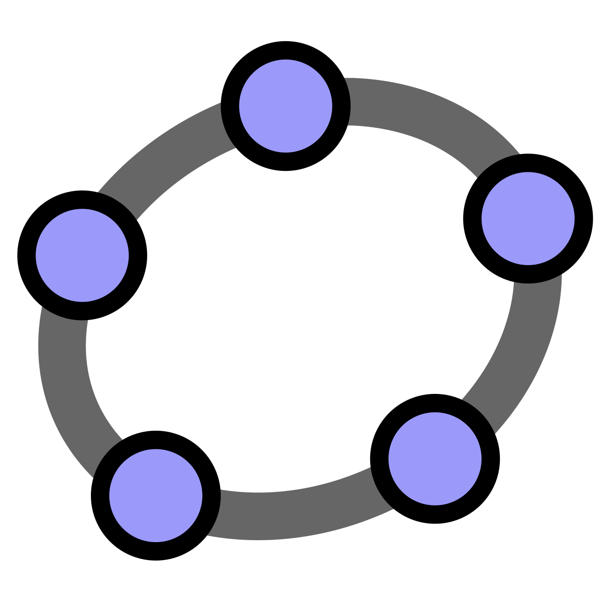

Unidad 3
Geogebra

Indagación matemática Externa
Objetivo
Modelar una situación de la vida cotidiana a través del software geogebra para su uso en en el currículum de matemática, física o colaborativo
Situación
¿En qué direcciones salen las señales electromagnéticas emitidas por una antena?
Desafío 1: Plantee la pregunta en lenguaje matemático.
- ¿Qué objeto matemático estamos estudiando?
- ¿Qué tipo de respuesta debemos entregar?
El plan ...
Desafío 3: Construya en Geogebra la situación a explorar
Desafío 4: Formule una conjetura, lo más clara y precisa posible, respecto a lo observado
¿Cómo podríamos demostrar matemáticamente esta conjetura?
- Parábola $C:y=a(x-h)^2+k$ y foco $F=(h, k+\frac{1}{4a})$
- Sea $P\in C$, $P=(x_0, a(x_0-h)^2+k)$
- Encontramos la pendiente de la recta que une a $P$ y a $F$.
- ... Seguimos con el proceso que indicamos en el plan, solo que analíticamente ...
- ¿Qué ángulo forma la recta que sale de la parábola con el eje x?
Desafío 5: Pregunta abierta ¿Será necesario demostrar en el colegio o bastará con el proceso en Geogebra?
Desafío 6: Plantea 3 nuevas preguntas de indagación derivadas de esta situación y su conjetura.
Desafío 7: ¿La Indagación matemática interna y externa a qué habilidades de matemática desarrolla?
Suba el link de Geogebra a Ucursos y como comentario sus respuestas
| Habilidad | Nivel Observado en PAES |
|---|---|
| Resolver Problemas | Bajo-Medio |
| Representar | Medio |
| Modelar | Bajo |
| Argumentar | Bajo |